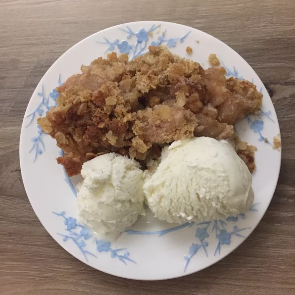

Apple Crisp

Description
This apple crisp recipe is the perfect way to kickoff the autumn season.
This iconic fall dessert is easy-to-make, fast, and kid-friendly.
Within minutes of throwing this apple crisp in the oven, you'll be
aromatically reminded why fall is the best season. For best results,
combine with a spiced tea and a choice view of some fall foliage.
Ingredients
- 6 apples - peeled, cored, and sliced
- 2 tablespoons white sugar
- 1/2 teaspoon ground cinnamon
- 1 cup brown sugar
- 3/4 cup old-fashioned oats
- 1 teaspoon ground cinnamon
- 1/2 cup cold butter
Steps
- Preheat over to 350 degrees F (175 degrees C).
- Toss apples with white sugar and 1/2 teaspoon cinnamon in a medium
bowl to coat; pour into a 9-inch square baking dish.
- Mix brown sugar, oats, flour, and 1 teaspoon cinnamon in a separate
bowl. Use a pastry cutter or 2 forks to mash cold butter into the
oats mixture until the mixture resembles coarse crumbs; spread over
the apples to the edges of the baking dish. Pat the topping gently
until even.
- Bake in preheated oven until golden brown and sides are bubbling, about 40 minutes.